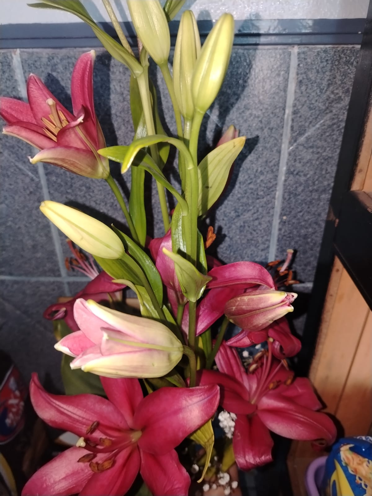

🪷
🪷
🪷
🪷
🪷
Para Wendy
DÍA 25 DE JUNIO DE 2026
Este día tiene un lugar muy especial en mi corazón.
Fue el día en que te regalé los lirios.
Y, si te soy completamente honesto, estaba muy nervioso. No era vergüenza, porque jamás me ha dado vergüenza demostrar lo mucho que te quiero. Era miedo... miedo de que pensaras que estaba yendo demasiado rápido o que el detalle no fuera suficiente para expresar todo lo que sentía.
Pero al final pensé algo muy simple:
"No quiero regalarle flores porque sea una fecha especial. Quiero regalárselas porque ella ya es especial para mí."
Y con ese pensamiento me animé.
✨ La Búsqueda de un Detalle Perfecto
Yo ya sabía que te gustaban los lirios, así que me puse a investigar. No tenía idea de cuáles escoger, cómo pedirlas o qué significaba cada una. Así que me puse a buscar (Soy terco, sí o sí quería regalarte los lirios) hasta encontrar una florería donde hubiera los lirios que quería.
Cuando llegué, la señora me preguntó:
—¿De qué color los quiere?
Y apenas los vi, no lo duhda. Escogí esos lirios porque el color me recordó al tono de tus labios... sí, esos que tanto me encantan.
Y pensé: "Tienen que ser estos."
El único problema era que el ramo era gigantesco. Yo solo lo veía crecer y crecer mientras la señora lo armaba y pensaba: "Ay... ya valí." Porque tú sabes que a mí me encanta esconder las sorpresas... y con semejante ramo era completamente imposible. JAJAJAJA.
✨ "Para mi pareja..."
Lo más bonito vino después. La señora me preguntó:
—¿Para quién son?
Y sin pensarlo le respondí:
—Para mi pareja.
Puede sonar curioso, porque oficialmente todavía no lo eras. Pero en mi corazón... yo ya te veía así. Y no sabes qué bonito fue decirlo.
Creo que la señora se dio cuenta de la ilusión con la que hablaba de ti, porque empezó a acomodar el ramo con todavía más cariño, le agregó algunos detalles y hasta me dio un consejo. Me dijo que no lo guardara en una bolsa negra, que lo llevara en la mano para que las flores no se maltrataran y para que, cuando las vieras, se vieran tan bonitas como realmente eran. Y le hice caso.
✨ Un Cuidado Absoluto
Todo el camino fui cuidando ese ramo como si fuera de cristal.
Sí, la gente me miraba. Sí, me daba risa porque todos volteaban a ver al tipo que iba cargando un ramo enorme. Pero, sinceramente... no me importó. Porque no me daba vergüenza que el mundo supiera que estaba enamorado de ti.
Lo único que quería era llegar y ver tu reacción. Y cuando vi tu carita... valió completamente la pena. Ver esa sonrisa fue mucho más bonito que cualquier nervio que hubiera sentido antes. En ese momento entendí que hacerte feliz también me hacía inmensamente feliz a mí.
Y creo que esa fue la primera vez que descubrí lo bonito que se siente regalar flores a alguien que realmente amas. No por cumplir. No por compromiso. Sino porque quieres recordarle, aunque sea con un pequeño detalle, lo importante que es para ti.

"Ojalá esta mujer nunca dude de lo mucho que la quiero."
✨ Tus Manos, Mis Flores Favoritas
Y luego pasó algo que me terminó de enamorar todavía más: ver cómo cuidabas esos lirios. Los tratabas con un cariño que me hacía sonreír cada vez que me enviabas una foto de ellos. Incluso los que todavía no habían florecido me parecían hermosos, porque imaginaba que, con el tiempo, también iban a abrirse.
Desde ese día los lirios se convirtieron en mis flores favoritas. Ya no porque sean bonitos... sino porque cada vez que veo uno, inevitablemente pienso en ti.
No sé si los lirios son tan bonitos por sí solos...
o si desde que los vi en tus manos aprendí a mirarlos diferente.
Porque ahora, cada vez que florecen, me recuerdan a ti:
a tu calma,
a tu ternura,
y a esa forma tan tuya de hacer bonito cualquier lugar donde estás.
Si algún día me preguntan por qué los lirios son mis flores favoritas,
solo voy a sonreír...
porque la respuesta siempre llevará tu nombre.
Con todo mi amor, Leonardo